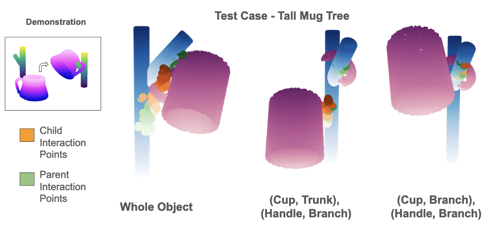
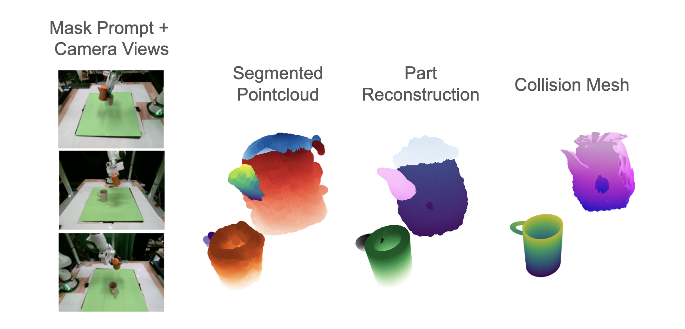
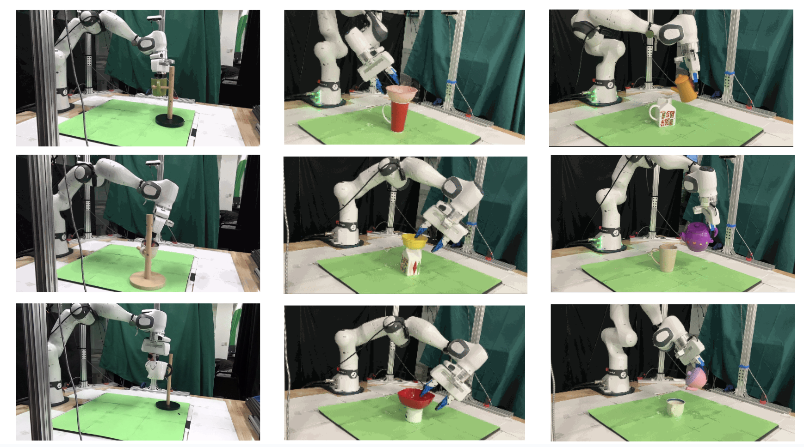
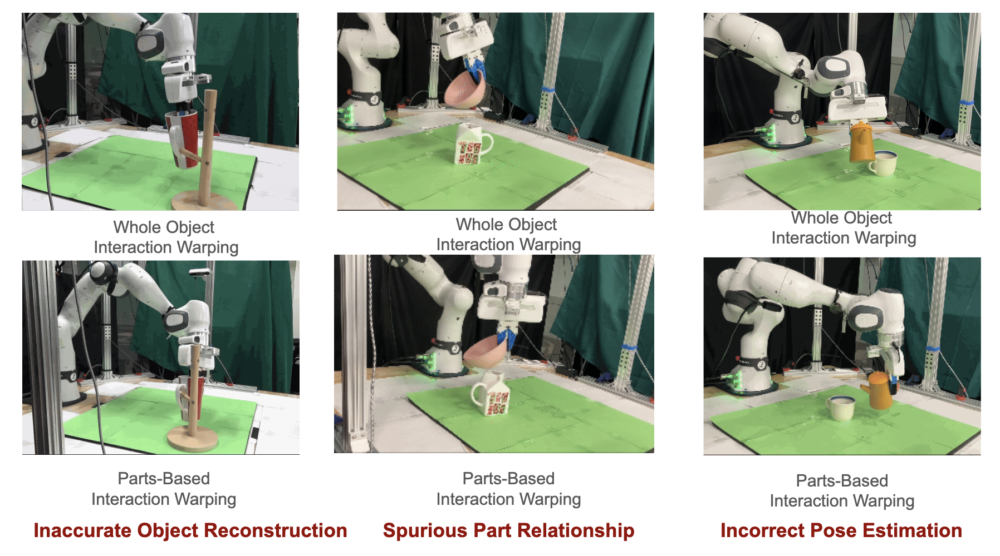
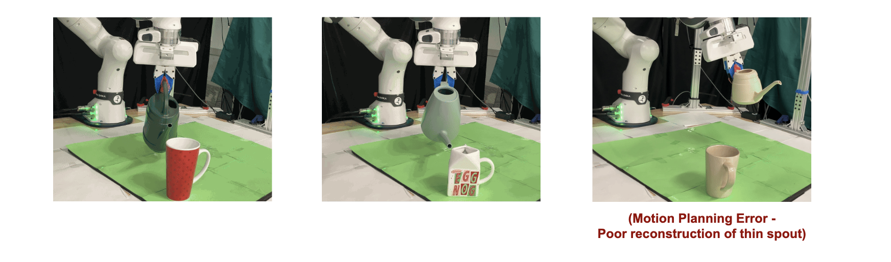

Code and paper available soon
Given a demonstration of a manipulation skill, a robot should be able to generalize that skill to any objects it encounters, including those that vary substantially in shape from those it has seen before. This requires both identifying salient object features for a given skill, and successfully adapting the skill policy to a novel object using those features. We propose a method for improving skill transfer from a single demonstration by decomposing objects into their constituent semantic parts; First, we leverage generative shape models to transfer interaction points on the parts of a demonstration object to a novel object. Then warp the demonstration trajectory to the novel interaction points using part relationships identified as relevant to skill execution.
We see two primary benefits to part decomposition in skill transfer. The first is better transfer of task-relevant features, like keypoints, through improved geometric reconstruction that avoids learning spurious correspondence between shape features, even from few training examples.

The second is independent consideration of relationships between parts, which may vary across objects in a category. As an example,if we’re given a demonstration of a mug hanging task to transfer to a much taller mug rack We see that the relationship identified between the cup and trunk isn’t useful when attempting skill transfer. Attempting to recreate it would result in skill failure. but the relationship of both parts of the mug to the branch are relevant. Our method improves skill transfer by identifying skill-relevant part relationships,
This enables parts-based interaction warping to transfer skills to objects with shapes far outside the robot’s training context. From as few as 5 training examples, and a single demonstration,
On the real robot, We utilize existing segmentation and semantic feature models to extract segmented point cloud views of each part, from which we can infer each part’s shape and pose, as well as an estimated collision mesh for motion planning.
We show that this method can successsfully generalize to a range of objects
We show where it improves over whole object warping
We can also generalize to new objects
